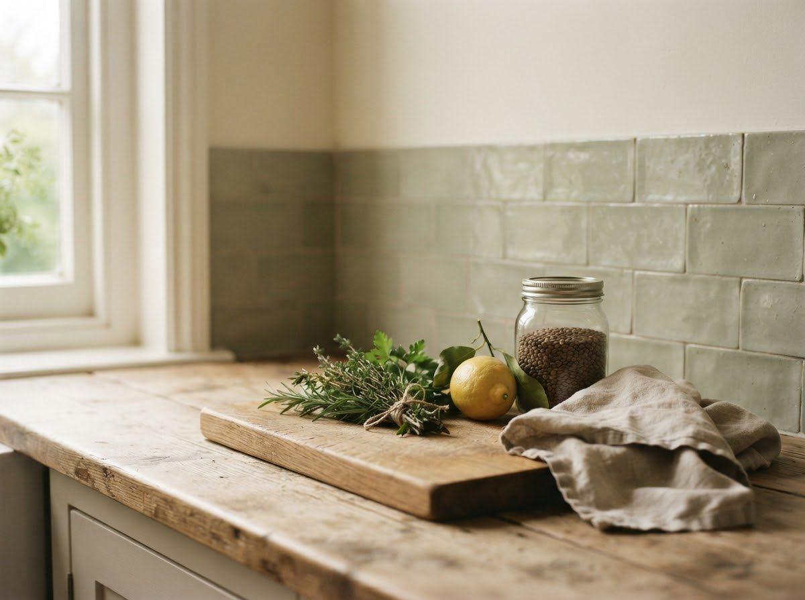
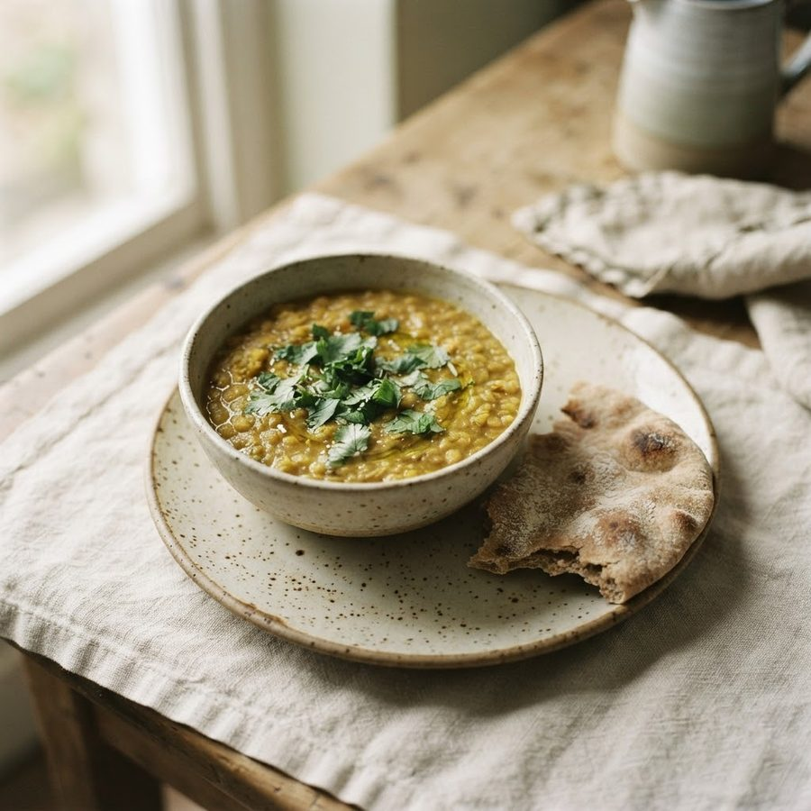
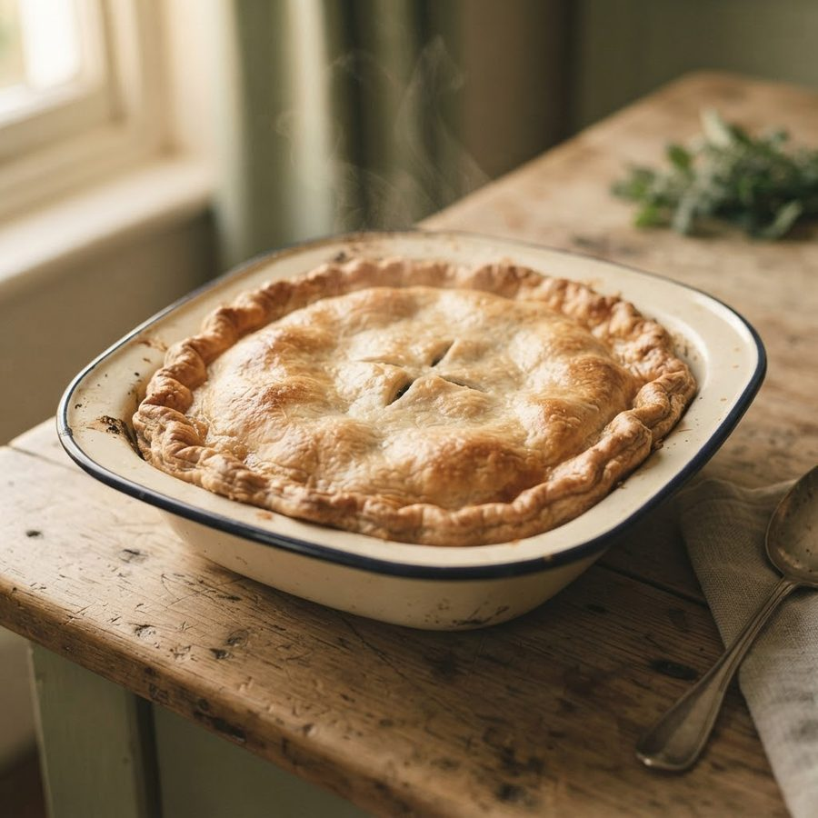
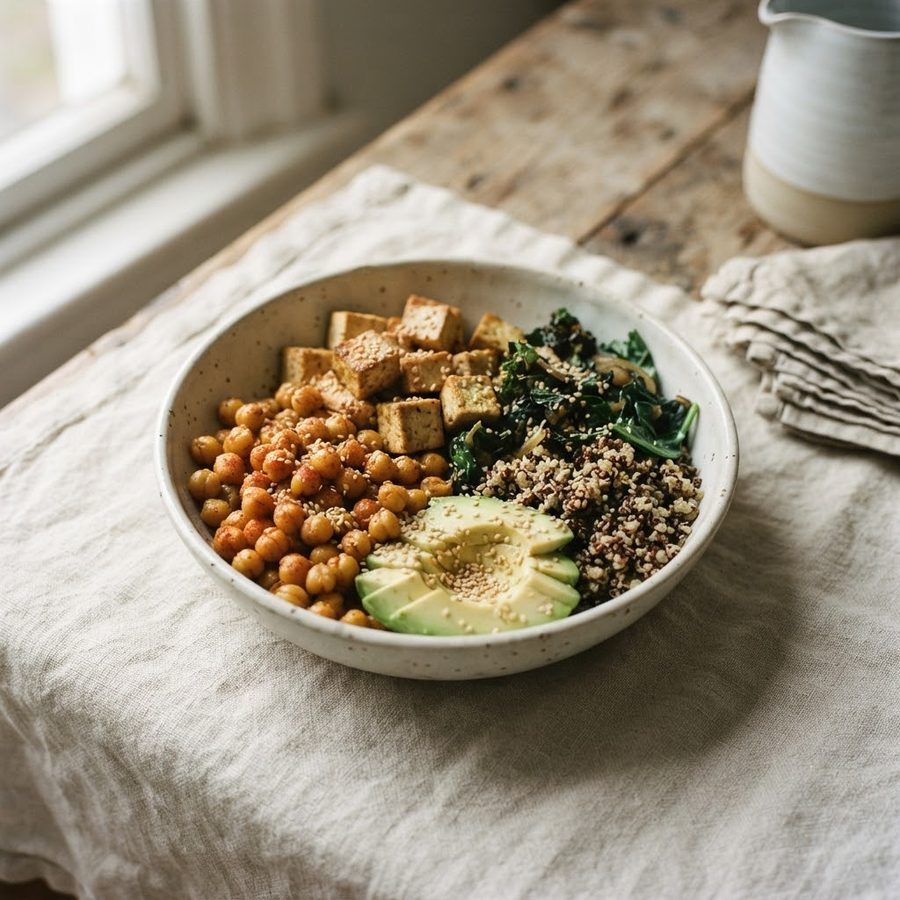
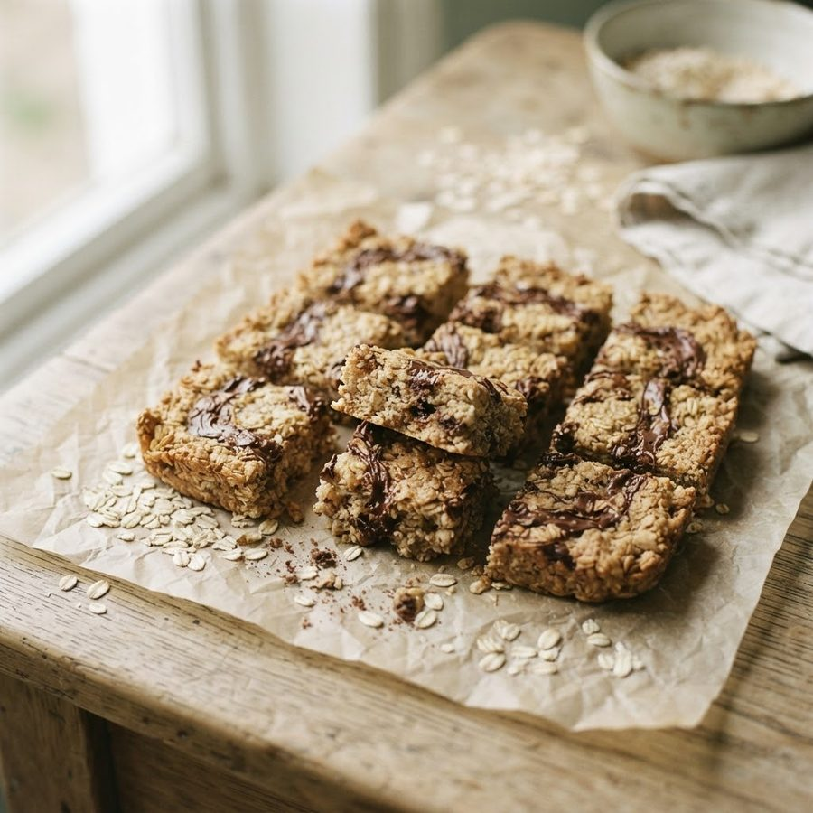
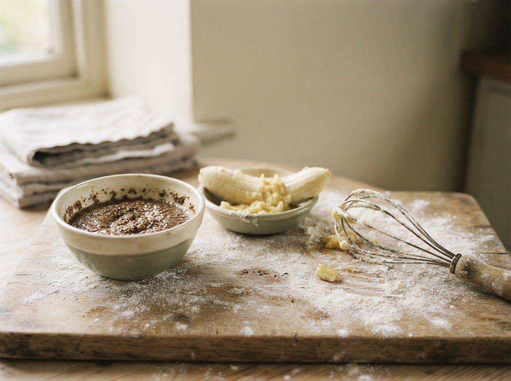

Dairy
Oat holds up best in tea and coffee, soya has the most protein, almond is the lightest. Vegan cheese and butter have come a long way, so it's worth trying a few brands rather than judging the whole category on the first one.

Pick a mood and I'll show you what I make. No meal plans, no lectures.

quick & easy
comfort food
high protein cheap & cheerful
cheap & cheerful

something sweetthe two easiest shelves to swap
Oat holds up best in tea and coffee, soya has the most protein, almond is the lightest. Vegan cheese and butter have come a long way, so it's worth trying a few brands rather than judging the whole category on the first one.

For baking: mashed banana, applesauce, or a flax egg (a tablespoon of ground flaxseed with three of water, left five minutes). For scrambles and omelettes: silken tofu or chickpea flour, which is closer than you'd expect.
This site is mostly about what's on the shelf next to the food - cosmetics, cleaning products, toiletries. But food is part of the same picture. Animal agriculture and animal testing aren't the same industry, but they share a root: how much weight we give to an animal's experience when it's inconvenient to us. If brand-checking your bathroom cabinet has got you thinking about the kitchen too, this is a gentle place to start - not a diet plan, just a next step if you want one.
"Is it vegan?" and "was it produced with better welfare?" are two different questions. This page is mostly about the first one.
cruelty-free vs vegan, for food
With cosmetics, cruelty-free is mostly about animal testing, and vegan is about ingredients. Food doesn't really have an animal-testing angle, so I think of it as two separate questions instead.
Is it vegan? This is about ingredients only - does the product contain anything derived from an animal, whether that's obvious (meat, milk, honey) or hidden (gelatine in a sweet, whey in a flavoured crisp, animal rennet in a cheese)? A product either is or isn't, based on what's actually in it.
Was it produced with better welfare? A completely different question, and the one free-range, cage-free and grass-fed labels are trying to answer. Those are about how an animal was kept during its life, not about whether the product contains animal-derived ingredients at all. A free-range egg still comes from a chicken; a grass-fed burger is still beef. Both questions are valid starting points, they're just not the same one, and I try to be clear about which I'm answering rather than blur the two together.
hidden animal ingredients to watch for
Tap any of these to see what it actually is. A red dot means always animal-derived; amber means it could go either way and the label won't always tell you.
loading…
easy swaps, no pressure
You don't have to overhaul everything at once. If you're just starting to look at dairy, eggs or gelatine-based sweets, here are a few gentle starting points.
Dairy is probably the easiest place to begin. Oat, soya, almond and pea milks work well in tea, coffee and cereal, and vegan cheeses, yoghurts and butters have come a long way, so it's worth trying a few brands to find ones you actually like rather than judging the whole category on the first one.
Eggs can feel trickier since they do a few different jobs in cooking. For baking, mashed banana, applesauce, or a flax or chia "egg" (ground seeds mixed with water) work well as a binder. For scrambles or omelettes, chickpea flour and tofu-based versions are surprisingly close.
Gelatine-based sweets are one of those hidden-ingredient areas, since gelatine turns up in jellies, marshmallows and some gummy sweets without always being obvious. Agar agar (a seaweed-based setting agent) and pectin-based sweets are easy substitutes, and a growing number of mainstream sweet brands now make gelatine-free versions. None of this needs to happen overnight - swapping one thing at a time still counts.
PETA offers a free vegan starter kit - recipes, meal plans and practical tips to get going, sent straight to you at no cost. It's their resource, not mine; I'm just pointing you to it because it's a solid, well-tested starting point.
If you'd rather ease in than overhaul everything at once, the impact page shows what just a few plant-based days a week actually adds up to, with honest numbers rather than dramatic ones. And if you haven't already, the quiz and brand check are still the fastest way to clean up what's already in your basket.